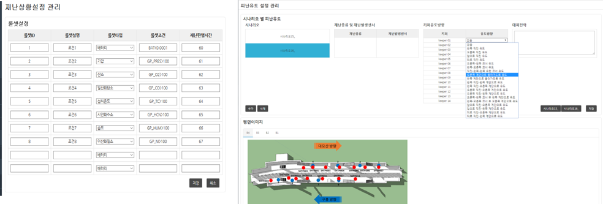

Development of an IoT-based Sensor Network System for Initial Emergency Evacuating Response System in Urban Underground Space
Eunchurn ParkS.H. Tech and Policy Institute / eunchurn.park@gmail.com
Mi-Yun ParkS.H. Tech and Policy Institute / momo6238@hanmail.net
Se-Gon KwonKORAIL Research Institute / tibobkr@korail.com
Sang-Ho LeeKORAIL Research Institute / gicha7788@korail.com
Introduction
Development of a IoT based Evacuation System based on the Disaster Prevention of Underground Spaces(subway station)
Introduction
Initial accident chart of KORAIL subway disaster (SOP)
What is M2M Technology?
What is M2M Technology?
M2M refers to direct communication between devices using any communications channel, including wired and wireless. Machine to machine communication can include industrial instrumentation, enabling a sensor or meter to communicate the data it records (such as temperature, inventory level, etc.) to application software that can use it.
Composition of research
Emergency detection sensor network configuration (gas sensor, etc.)
Development of risk level evaluation algorithm based on sensor data
Development of evacuation path analysis algorithm (with SOP)
Development of sensor integrated database system and decision making system
Core of M2M Technology
Sensor Network
Wireless Communication
Control
Wireless Communication
LoRa Technology
Monitoring
Control
Configuration of M2M System
- Real-time Data Acquisition
- Status / Risk Assessment Calculation
- Evacuation Route Analysis / Display
Sensors DB / Display data
Virtualization
Web Application
SOP Module Aloghrithm
Minimum Node Weight Spanning Tree Algorithm(MNWST) ; Minimum distance and path to estimate the minimum distance from the nodes to the minimum distances (node) to move from each node to the starting point (sink)

Configuration SOP Module
Node Optimization
Node Optimization
Field Test (Gaepodong Station)
STAIRWAY E.L. Pannel DISPLAY
Field Test (Gaepodong Station)
Further development
Mobile application (SOP) for the related organizations
More fast wireless communication responses and bandwith (only use communication module, simplify communication layers
Network optimization with Mesh and Star Network / Connectivity with SK-Telecom's base station of LoRa
Optimiztion of disaster detection and evacuation route analysis program
More supports initial response decision and early evacuation of passengers in the station room